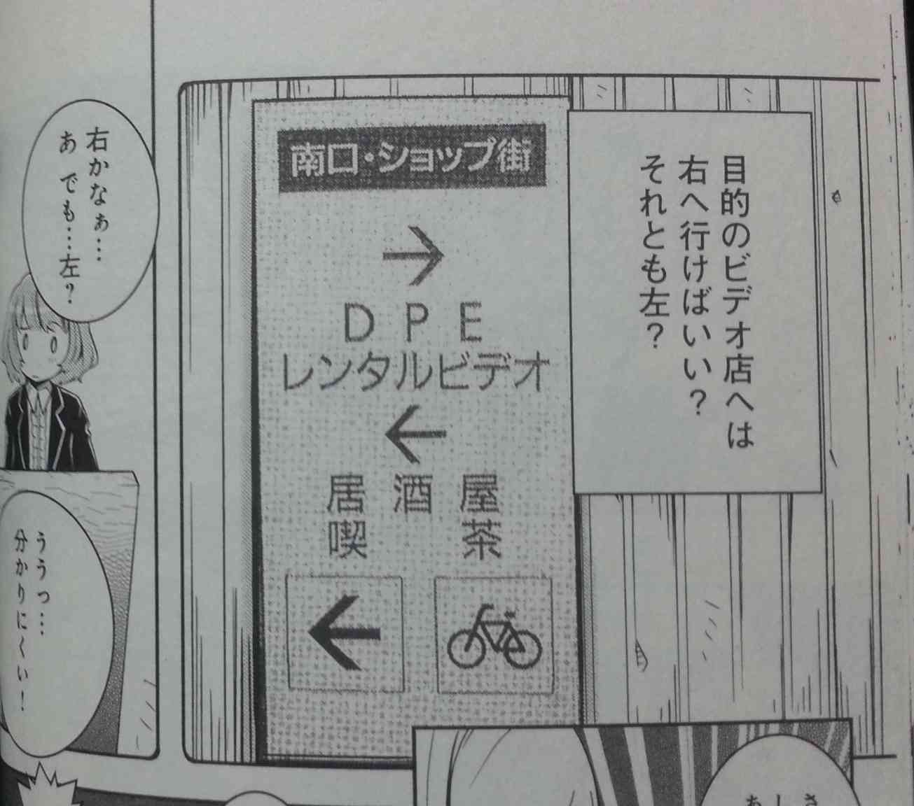

好きな本の紹介とか
マンガで読む「分かりやすい表現」の技術(2014/01/28)
～世の中わかりにくいことが多い～
世の中を歩いていると、わかりにくい案内板があったりしますよね。
ホームページを見ていると、どこに目的の情報があるのか？
分かりにくかったりしませんか？

なぜそれが分かりにくいのか？
また、どうすれば分かりやすい表現ができるのか。
と言ったテーマをマンガで分かりやすく説明してくれる本がこれです。
～親しみやすいショートストーリー～
新人の女の子がデザイン系の会社に就職して、数々の苦難を乗り越えながら、分かりやすい表現をするにはどうすればよいかということを学んでいく、マンガです。
登場人物が可愛らしく描かれており、(別に管理人の趣味というわけではありませんが…)、
ストーリーもそれなりに面白く、また原作がベストセラーになった一般書籍であるため、
「分かりやすい表現」の説明の部分については、図や絵を用いながら細かく丁寧に解説してくれます。
マンガではありますが、抑えるポイントはしっかり抑えているため、どうすれば分かりやすい表現ができるかがよくわかります。
また、本の付録部分には、分かりやすく表現するためのチェックシートも記載されています。
～このｗｅｂサイトも分かりやすさを重視～
このＷｅｂサイトも、極力分かりにく表現をしないようにしているつもりではあります。
・ ページに訪れた人が目的の情報に辿り着きやすいサイト構成
・ 文字の大きさや色を変えることによる強調表現
・ 読み手に対して、多すぎず、少なすぎずの情報量
・ 細かい情報は、別窓で表示といった情報の制限。
この本に書いてある、基本的なことは抑えているつもりではあります。
どちらにせよ、分かりやすくするには「おもてなしの心」が重要ということになります。(本に書いています)
マンガは気軽に読むことができますが、情報量が原作本よりも乏しいというのが欠点になります。
なので、詳しく分かりやすい表現を理解したいと思う人は、原作本も読んでみることをお勧めします。
私は、２冊とも読みました。

ブルーバックスのベストセラー、藤沢晃治著『「分かりやすい表現」の技術』を漫画化!
必ず役立つ、意図を正しく伝えるためのテクニック
どんなプレゼンも完璧にこなせる、誤解を生まないレジュメが作れる……。そんな、だれにでも必要なテクニックを、分かりやすく解説します。マンガだから面白い。面白いから、よく分かる!

パソコンのマニュアルはなぜ分かりにくいか各種の取り扱い説明書、案内板、道路標識、ビジネスレタ-、通達、規約条文、広告……などなど、相手に即座に分かってもらえる情報発信のために必読のル-ル集。